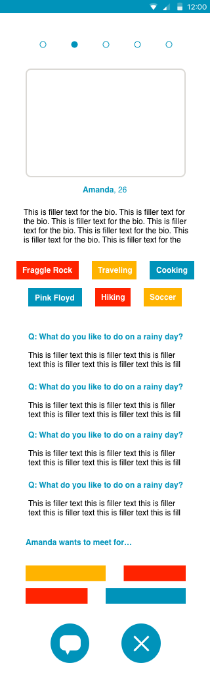
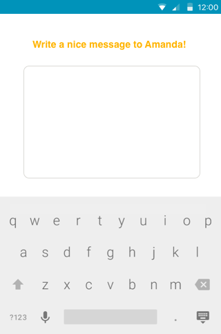

Renee Hyde
UX / Front-End / Copywriting
Friending App
Focus: Product Design, UI
I wanted to tackle the problem of moving to a new city to and not knowing anyone. It’s one that many millennial have surely experienced.
From interviews, I found out that the challenges of meeting friends in a new place are many. People struggle with crowded schedules, but they are willing to invest time in meeting the right people. People aren’t sure of the most effective places to meet new friends. It’s hard to make the “first move” on befriending someone without fearing that you’ll seem too aggressive. Introverts especially struggle with meeting people in the 1-to-1 settings that they’re more comfortable with.
People are currently meeting new friends on many different platforms:
- Local events
- Mutual contacts
- Work
- Hobbies and organizations
- Neighbors
- Striking up conversations in daily life
- meetup
- couchsurfing
- craigslist
- tinder
- OkCpuid
- Bumble BFF
Still, these solutions aren’t right for everyone.
- There are many dating sites, but solutions for meeting friends are still limited.
- Introverts aren’t served as well by group “meetup”-type services. They feel less comfortable and have trouble approaching people for a friendship outside of the group.
- There is also less control over your own time, as well as whether you’ll meet someone you connect with, when opting for group activity services.
- Sites like craigslist allow you to reach out to others through personal ads or activity suggestions. But the lack of trust in internet strangers makes this option less attractive to many.
- There is a proliferation of “swiping” sites that make it easy to meet a large quantity of people. But this model fosters low investment and conversations that fizzle quickly.
I want to solve the problem of how to efficiently find new connections. The result: an app for people who want quality introductions in their city.
The Design
- The design should be familiar. It will take elements of similar apps, but with new features that set it apart as a “friending” rather than dating app.
- Match quality is important. The app could employ a personality test, mutual Facebook friends, mutual interests, or something similar to ensure that matches have things in common.
- A limited number of matches (5 per day) gives users an incentive to consider each match more closely.
- Instead of swiping, the app requires users to send a message to connect with another user.
- A more detailed profile leads to lots of conversation material.
- De-emphasize profile photos (by having a single photo or a few, small photos) to reduce unwanted dating solicitations.
- An inbox that helps users keep track of where conversations stand.
Key Screens

